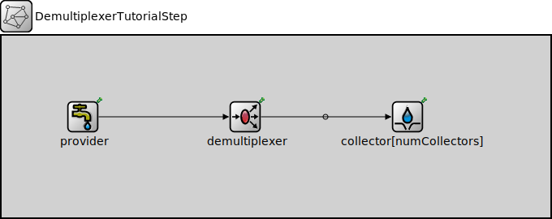

Package: inet.tutorials.queueing
DemultiplexerTutorialStep
network(no description)
Usage diagram
The following diagram shows usage relationships between types. Unresolved types are missing from the diagram.
Parameters
| Name | Type | Default value | Description |
|---|---|---|---|
| numCollectors | int |
Properties
| Name | Value | Description |
|---|---|---|
| isNetwork |
Unassigned submodule parameters
| Name | Type | Default value | Description |
|---|---|---|---|
| provider.displayStringTextFormat | string | "created %p pk (%l)" |
determines the text that is written on top of the submodule |
| provider.packetNameFormat | string | "%a-%c" |
see directives in module documentation |
| provider.packetRepresentation | string | "byteCount" |
determines the chunk of the packet data |
| provider.packetProtocol | string | "unknown" | |
| provider.packetLength | int | ||
| provider.packetData | int | -1 | |
| provider.attachCreationTimeTag | bool | true | |
| provider.attachIdentityTag | bool | true | |
| provider.attachDirectionTag | bool | true | |
| provider.clockModule | string | "" |
relative path of a module that implements IClock(1,2); optional |
| provider.initialProvidingOffset | double | 0s |
initial duration before which packets are not provided |
| provider.providingInterval | double | 0s |
elapsed time between subsequent packets allowed to be pulled by the connected packet collector, 0 means any number of packets can be pulled at the same simulation time |
| provider.scheduleForAbsoluteTime | bool | true |
when a clock is used relative means that setting the clock will not affect the simulation time of the event |
| demultiplexer.displayStringTextFormat | string | "passed %p pk (%l)" |
determines the text that is written on top of the submodule |
| collector.displayStringTextFormat | string | "received %p pk (%l)" |
determines the text that is written on top of the submodule |
| collector.clockModule | string | "" |
relative path of a module that implements IClock(1,2); optional |
| collector.initialCollectionOffset | double | -1s |
initial duration before which packets are not collected, negative value means: try the first collection in initialize() |
| collector.collectionInterval | double |
elapsed time between subsequent packets pulled from the connected packet provider |
|
| collector.scheduleForAbsoluteTime | bool | true |
when a clock is used relative means that setting the clock will not affect the simulation time of the event |
Source code
network DemultiplexerTutorialStep { parameters: int numCollectors; submodules: provider: PassivePacketSource { @display("p=100,100"); } demultiplexer: PacketDemultiplexer { @display("p=300,100"); } collector[numCollectors]: ActivePacketSink { @display("p=500,100,c,100"); } connections allowunconnected: provider.out --> demultiplexer.in; for i=0..numCollectors-1 { demultiplexer.out++ --> collector[i].in; } } //-------------------------------------------------File: tutorials/queueing/QueueingTutorial.ned
 This documentation is released under the Creative Commons license
This documentation is released under the Creative Commons license